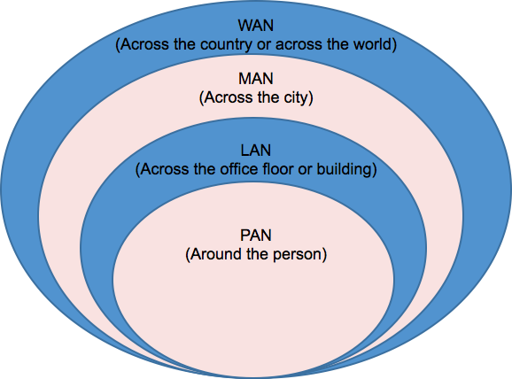
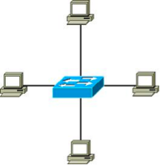

First
About Overview
In this module, we are going to cover the various types of networks, including local area networks
在本模塊中，我們將介紹各種類型的網絡，包括局域網
wide area networks, personal area networks,and metropolitan area networks.
廣域網，個人區域網和城域網。
next,we will cover the various network relationships, such as client/server and peer-to-peer,
and focus on the types of resources our networks use.
接下來，我們將介紹各種網絡關係，例如客戶端/服務器和對等網絡，並集中討論網絡使用的資源類型。
Finally, we will talk about the topologies of our networks, such as the bus, the ring,
the star, the full mesh, and hybrid network topologies.
最後，我們將討論網絡的拓撲，例如總線，環形，星形，全網格和混合網絡拓撲。
Network Defined By Geography
Networks are defined by the geography they cover.
網絡由其所覆蓋的地理位置定義。
We start with the area around a single person, with this area being termed the personal area network (PAN).
我們從一個人周圍的區域開始，將該區域稱為個人區域網絡（PAN）。
Next, we expand outward to the local area network (LAN), which can contain an entire office floor or building.
接下來，我們向外擴展到局域網（LAN），該局域網可以包含整個辦公樓層或建築物。
Moving outward again, we have the metropolitan area network, which covers the area across the city by connecting multiple LANs together.
再次向外移動，我們有了城域網，該城域網通過將多個LAN連接在一起而覆蓋了整個城市。
Finally, we have the wide area network (WAN). This is the largest network we define by geography and it can go across the country or even across the world.
最後，我們有了廣域網（WAN）。 這是我們按地理位置定義的最大網絡，它可以遍及全國，甚至遍及全球。
A great example of a WAN is the Internet, since it connects many networks together and stretches across the globe.
WAN就是一個很好的例子，因為Internet將許多網絡連接在一起並遍及全球。

Personal Area Network
A PAN has a very small range limited to just a few meters.
WAN就是一個很好的例子，因為Internet將許多網絡連接在一起並遍及全球。
If you stretch your hands out at your sides and spin around in a circle, this is the physical range of most PANs.
如果您將雙手伸向兩側並轉一圈，則這是大多數PAN的物理範圍。
Bluetooth is one of the main things we use to create a PAN, although USB and infrared can also be used for these networks.
藍牙是我們用於創建PAN的主要內容之一，儘管USB和紅外也可以用於這些網絡。
Bluetooth has a range between one meter and 100 meters depending on which class of Bluetooth you are using,
藍牙的範圍在1米至100米之間，具體取決於您所使用的藍牙類別，
but most common Bluetooth devices are class two devices limited to 10 meters.
但最常見的藍牙設備是限於10米的二級設備。
Some good examples of PANs are the connection between a USB hard drive and a laptop,
PAN的一些很好的例子是USB硬盤驅動器和筆記本電腦之間的連接，
or a Bluetooth cellphone connecting to your car stereo system wirelessly.
或藍牙手機無線連接到您的汽車立體聲系統。
Local Area Network
The next type of network defined by geography is the LAN,
地理定義的下一種網絡類型是LAN
which stands for local area network.
代表局域網。
The local area network is comprised of several devices that allow computers to connect to each other within a small geographic area.
局域網由幾個設備組成，這些設備使計算機可以在一個較小的地理區域內相互連接。
A LAN is, at its most basic,
局域網是最基本的
a connection of several workstations together using a hub, switch, or wireless access point.
使用集線器將多個工作站連接在一起，交換機或無線接入點。
LANs have a limited distance associated with them, with each network segment usually limited to 100 meters or less.
局域網的距離有限，每個網段通常限制在100米或更短。
Generally, a LAN is used to network the floor of an office, or possibly the entire office building in smaller networks.
通常，LAN用於將辦公室地板或較小網絡中的整個辦公樓聯網。
LANs are generally connected in either a wired or wireless manner.
LAN通常以有線或無線方式連接。
If wired, they are connected using unshielded twisted pair cable using the Ethernet (IEEE 802.3) standard;
如果已連接，則使用符合以太網（IEEE 802.3）標準的非屏蔽雙絞線電纜進行連接；
if wireless, they are connected using Wi-Fi radio signal (IEEE 802.11) standards.
如果為無線，則它們使用Wi-Fi無線電信號（IEEE 802.11）標准進行連接。

Metropolitan Area Networks
Another way we can geographically define our networks is as a MAN.
我們可以在地理上定義網絡的另一種方法是將其作為MAN。
A metropolitan area network connects scattered locations across the city or county.
城域網連接整個城市或縣的分散位置。
This covers a larger geographical area than a local area network, but also a much smaller area than a wide-area network.
這比局域網覆蓋更大的地理區域，但是比廣域網覆蓋的區域小得多。
Wide Area Networks
The WAN is used to connect network components that are geographically separated over vast distances together.
WAN用於將地理位置遙遠的網絡組件連接在一起。
An example of a WAN would be to connect an office in Los Angeles to another corporate office in New York.
WAN的一個示例是將洛杉磯的辦公室連接到紐約的另一公司辦公室。
This can be done using virtual private networks (VPNs) over the Internet or using dedicated leased lines that would physically connect the city pairs together.
可以使用Internet上的虛擬專用網絡（VPN）或將城市對實際連接在一起的專用租用線路來完成。
Regardless of the method of connection,
無論採用哪種連接方式，
once the two local area networks from Los Angeles and New York are connected,
一旦將洛杉磯和紐約的兩個局域網連接起來，
they become part of the larger wide area network topology.
它們成為更大的廣域網拓撲的一部分。